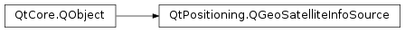

QGeoSatelliteInfoSource¶
Synopsis¶
Functions¶
- def
sourceName() - def
updateInterval()
Virtual functions¶
- def
error() - def
minimumUpdateInterval() - def
requestUpdate([timeout=0]) - def
setUpdateInterval(msec) - def
startUpdates() - def
stopUpdates()
Signals¶
- def
error(arg__1) - def
requestTimeout() - def
satellitesInUseUpdated(satellites) - def
satellitesInViewUpdated(satellites)
Static functions¶
- def
availableSources() - def
createDefaultSource(parent) - def
createSource(sourceName, parent)
Detailed Description¶
The
PySide2.QtPositioning.QGeoSatelliteInfoSourceclass is an abstract base class for the distribution of satellite information updates.The static function
QGeoSatelliteInfoSource.createDefaultSource()creates a default satellite data source that is appropriate for the platform, if one is available. Otherwise, availablePySide2.QtPositioning.QGeoPositionInfoSourceFactoryplugins will be checked for one that has a satellite data source available.Call
PySide2.QtPositioning.QGeoSatelliteInfoSource.startUpdates()andPySide2.QtPositioning.QGeoSatelliteInfoSource.stopUpdates()to start and stop regular updates, orPySide2.QtPositioning.QGeoSatelliteInfoSource.requestUpdate()to request a single update. When an update is available,PySide2.QtPositioning.QGeoSatelliteInfoSource.satellitesInViewUpdated()and/orPySide2.QtPositioning.QGeoSatelliteInfoSource.satellitesInUseUpdated()will be emitted.If regular satellite updates are required,
PySide2.QtPositioning.QGeoSatelliteInfoSource.setUpdateInterval()can be used to specify how often these updates should be emitted. If no interval is specified, updates are simply provided whenever they are available. For example:// Emit updates every 10 seconds if available QGeoSatelliteInfoSource *source = QGeoSatelliteInfoSource::createDefaultSource(0); if (source) source->setUpdateInterval(10000);To remove an update interval that was previously set, call
PySide2.QtPositioning.QGeoSatelliteInfoSource.setUpdateInterval()with a value of 0.Note that the satellite source may have a minimum value requirement for update intervals, as returned by
PySide2.QtPositioning.QGeoSatelliteInfoSource.minimumUpdateInterval().
-
class
PySide2.QtPositioning.QGeoSatelliteInfoSource(parent)¶ Parameters: parent – PySide2.QtCore.QObjectCreates a satellite source with the specified
parent.
-
PySide2.QtPositioning.QGeoSatelliteInfoSource.Error¶ The Error enumeration represents the errors which can occur.
Constant Description QGeoSatelliteInfoSource.AccessError The connection setup to the satellite backend failed because the application lacked the required privileges. QGeoSatelliteInfoSource.ClosedError The satellite backend closed the connection, which happens for example in case the user is switching location services to off. This object becomes invalid and should be deleted. A new satellite source can be created by calling PySide2.QtPositioning.QGeoSatelliteInfoSource.createDefaultSource()later on.QGeoSatelliteInfoSource.NoError No error has occurred. QGeoSatelliteInfoSource.UnknownSourceError An unidentified error occurred.
-
static
PySide2.QtPositioning.QGeoSatelliteInfoSource.availableSources()¶ Return type: list of strings Returns a list of available source plugins, including the default system backend if one is available.
-
static
PySide2.QtPositioning.QGeoSatelliteInfoSource.createDefaultSource(parent)¶ Parameters: parent – PySide2.QtCore.QObjectReturn type: PySide2.QtPositioning.QGeoSatelliteInfoSourceCreates and returns a source with the specified
parentthat reads from the system’s default source of satellite update information, or the highest priority available plugin.Returns 0 if the system has no default satellite source, no valid plugins could be found or the user does not have the permission to access the satellite data.
-
static
PySide2.QtPositioning.QGeoSatelliteInfoSource.createSource(sourceName, parent)¶ Parameters: - sourceName – unicode
- parent –
PySide2.QtCore.QObject
Return type: Creates and returns a source with the given
parent, by loading the plugin namedsourceName.Returns 0 if the plugin cannot be found.
-
PySide2.QtPositioning.QGeoSatelliteInfoSource.error()¶ Return type: PySide2.QtPositioning.QGeoSatelliteInfoSource.ErrorReturns the last error that occurred.
This signal is not emitted when a
PySide2.QtPositioning.QGeoSatelliteInfoSource.requestTimeout()has occurred.
-
PySide2.QtPositioning.QGeoSatelliteInfoSource.error(arg__1) Parameters: arg__1 – PySide2.QtPositioning.QGeoSatelliteInfoSource.Error
-
PySide2.QtPositioning.QGeoSatelliteInfoSource.minimumUpdateInterval()¶ Return type: PySide2.QtCore.int
-
PySide2.QtPositioning.QGeoSatelliteInfoSource.requestTimeout()¶
-
PySide2.QtPositioning.QGeoSatelliteInfoSource.requestUpdate([timeout=0])¶ Parameters: timeout – PySide2.QtCore.intAttempts to get the current satellite information and emit
PySide2.QtPositioning.QGeoSatelliteInfoSource.satellitesInViewUpdated()andPySide2.QtPositioning.QGeoSatelliteInfoSource.satellitesInUseUpdated()with this information. If the current satellite information cannot be found within the giventimeout(in milliseconds) or iftimeoutis less than the value returned byPySide2.QtPositioning.QGeoSatelliteInfoSource.minimumUpdateInterval(),PySide2.QtPositioning.QGeoSatelliteInfoSource.requestTimeout()is emitted.If the timeout is zero, the timeout defaults to a reasonable timeout period as appropriate for the source.
This does nothing if another update request is in progress. However it can be called even if
PySide2.QtPositioning.QGeoSatelliteInfoSource.startUpdates()has already been called and regular updates are in progress.
-
PySide2.QtPositioning.QGeoSatelliteInfoSource.satellitesInUseUpdated(satellites)¶ Parameters: satellites –
-
PySide2.QtPositioning.QGeoSatelliteInfoSource.satellitesInViewUpdated(satellites)¶ Parameters: satellites –
-
PySide2.QtPositioning.QGeoSatelliteInfoSource.setUpdateInterval(msec)¶ Parameters: msec – PySide2.QtCore.int
-
PySide2.QtPositioning.QGeoSatelliteInfoSource.sourceName()¶ Return type: unicode Returns the unique name of the satellite source implementation in use.
This is the same name that can be passed to
PySide2.QtPositioning.QGeoSatelliteInfoSource.createSource()in order to create a new instance of a particular satellite source implementation.
-
PySide2.QtPositioning.QGeoSatelliteInfoSource.startUpdates()¶ Starts emitting updates at regular intervals. The updates will be provided whenever new satellite information becomes available.
If satellite information cannot be retrieved or some other form of timeout has occurred the
PySide2.QtPositioning.QGeoSatelliteInfoSource.satellitesInViewUpdated()andPySide2.QtPositioning.QGeoSatelliteInfoSource.satellitesInUseUpdated()signals may be emitted with empty parameter lists.
-
PySide2.QtPositioning.QGeoSatelliteInfoSource.stopUpdates()¶ Stops emitting updates at regular intervals.
-
PySide2.QtPositioning.QGeoSatelliteInfoSource.updateInterval()¶ Return type: PySide2.QtCore.int
© 2018 The Qt Company Ltd. Documentation contributions included herein are the copyrights of their respective owners. The documentation provided herein is licensed under the terms of the GNU Free Documentation License version 1.3 as published by the Free Software Foundation. Qt and respective logos are trademarks of The Qt Company Ltd. in Finland and/or other countries worldwide. All other trademarks are property of their respective owners.